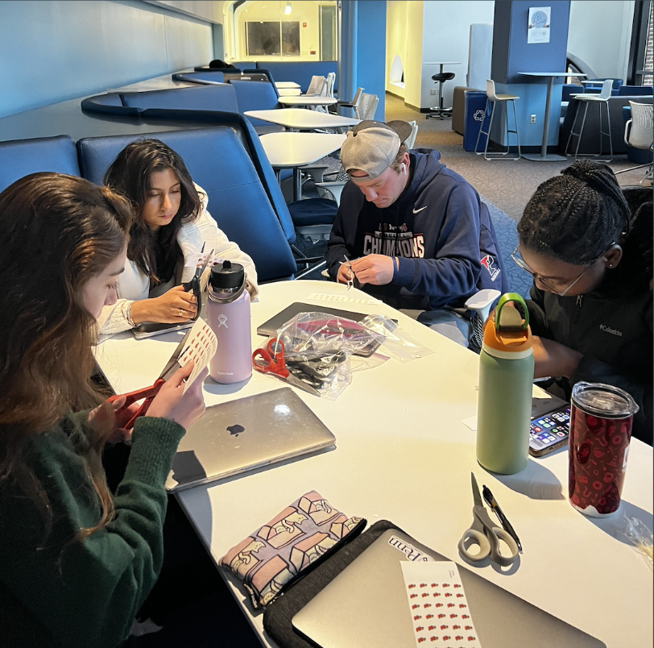
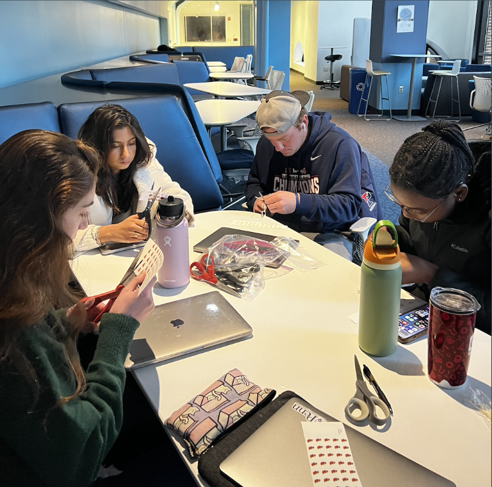

Our project, "Echoes of Festivities," aimed to humanize the lives of those imprisoned at Eastern State in 1916 by visualizing their holiday experiences through a 3D lasercut medium. Specifically, we designed a 12-tiered tree structure, where each layer represented a month and the stickers symbolized mentions of holidays in The Umpire. This approach combined historical data collected directly from archival images with tangible design elements, enabling all project viewers to connect physically with the experiences of those imprisoned at Eastern State.
The primary goal of our project was to use fabrication and data visualization to understand how cultural events that hold great importance outside of the prison walls were discussed and celebrated within Eastern State. We were interested in how often these events were mentioned, a metric which could be indicative of the importance of these holidays to inmates. By presenting the data as a tree adorned with stickers for each holiday mentioned in 1916, we hoped to allow viewers to take in information on all of the holidays discussed all at once. The stickers served as a quantitative measure of the holidays discussed, while the tree itself symbolized the continuity and collective memory of these events. Ultimately, our project also aimed to inspire viewers to delve deeper into the dataset, and imagine the prisoners’ perspectives during the holidays and as they documented them.
Our initial brainstorming sessions explored multiple ideas, such as a Thanksgiving table or a tree with ornaments for each holiday. Eventually, we decided on a 12-tiered tree because it provided a visually compelling and structured way to depict the timeline of a year, while at the same time emphasizing the cyclical nature of holidays. We used Python and the Pandas library to process the dataset, counting holiday mentions in the newspaper in 1916. This automation was crucial in handling the dataset efficiently, avoiding potential human error, and it also allowed us to allocate more time to both conceptualizing and implementing our design. We also cleaned the data, standardizing text to lowercase and incrementing counters for each holiday. The tree design began as a sketch, which we refined using Adobe Illustrator. The laser cutter’s precision allowed us to transform these designs into flat wooden structures, which we stacked on top of one another. For a video of the laser cutter in action, click here.
The stickers were designed using Flaticon and printed on sticker paper. The assembly process involved carefully arranging the stickers on the tree layers. Each layer is a snapshot of a month in 1916, forming a cohesive overview of the year when viewed as a whole in the final design.
In terms of successes, the 12-tiered tree successfully merged data and design, making the abstract concept of holiday mentions tangible. We were able to leverage tools like Python, Illustrator, and the laser cutter to streamline our workflow and ensure precision. And ultimately, we believe our final product achieved our goal of humanizing those imprisoned at Eastern State. In terms of challenges, we initially were uncertain as to how to consolidate mentions of each holiday, when spelling, capitalization, and case may be inconsistent or lacking detail. Some holidays we expected to incorporate were not represented due to their absence in the dataset. Balancing the time needed for data analysis, design, and fabrication also proved challenging. We had to compromise on adding etched icons for each holiday, as initially planned.
As the documentarian, I was responsible for capturing our group’s process through photos, videos, and meeting notes. I documented key steps in our project, such as the laser cutting process, and organized these materials into a shared Google doc. I also summarized our project after each class meeting. My work provided a clear record of our progress and supported our presentation by visually showcasing the project’s development. During meetings, I took selfies of us in action! (See above) I also contributed creatively, offering feedback on the tree design and suggesting ways to highlight the stickers and tree structure in our presentation. I also assisted with assembly tasks during the final stages, ensuring our timeline was met.
I think overall our group demonstrated strong teamwork and creativity, but there was room for improvement in task management. For instance, sometimes we were slow to get started at the beginning of class, as everyone recalibrated themselves with their project and their role on it. We also spent a lot of time in the preliminary brainstorming phase, deciding which project to choose from our initial ideas. Overall, I definitely appreciated the diversity of perspectives in our group, and I think it was nice that the groups were randomized. Each member really did bring unique skills – whether in fabrication, design, or data analysis – which enriched the final project outcome. Our collaborative spirit was evident in the way we supported one another and assisted as needed, especially when facing technical challenges with the laser cutter.
If given more time, we would have loved to incorporate etched icons to represent each holiday into the tree layers. This detail would add an additional layer of depth and interactivity, allowing users to feel the difference between icons and thus holidays. I would also explore documenting additional years, or perhaps documenting mentions of a single holiday over the course of several years.
Ultimately, I think ours was a meaningful and rewarding project that achieved its goal of effectively visualizing and bringing quantitative data to life. By combining historical analysis with fabrication, we presented a compelling narrative of the inmates’ holiday experiences. I think our group succeeded in delivering a thoughtful and impactful final product. This project introduced me to the myriad resources the education commons has to offer. It certainly deepened my appreciation for the role of visual representation in bringing data to life, and it also stressed the importance of giving thoughtful consideration to how data could be best represented.

 
